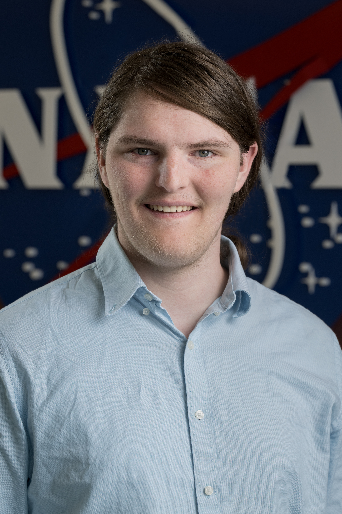

Hi, I'm Newt!
I'm a computer science student dedicated to improving the environment using technology. Also, I use she/they pronouns.
All sections need some h tag to meet HTMl standards
I'm a computer science student dedicated to improving the environment using technology. Also, I use she/they pronouns.
I'm a hard-working person dedicated to furthering my technical and soft skills to succeed in my career. In my free time, I love producing music, going hiking, traveling (here I'm posing with community members in eSwatini), programming, and doing environmental volunteering.
I hope to employ my previous experiences in electrical, systems, and civil engineering and knowledge of computer software and hardware as well as hands-on experience protecting natural ecosystems to become a sustainaiblity and/or IT intern this summer.